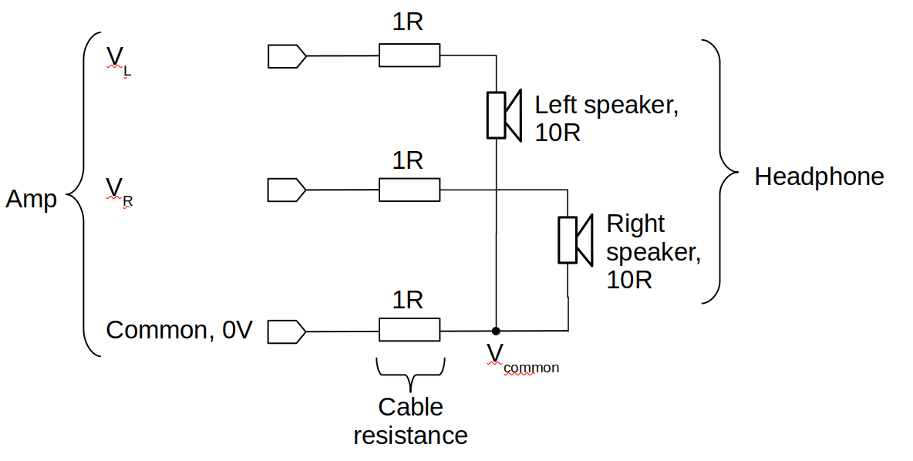
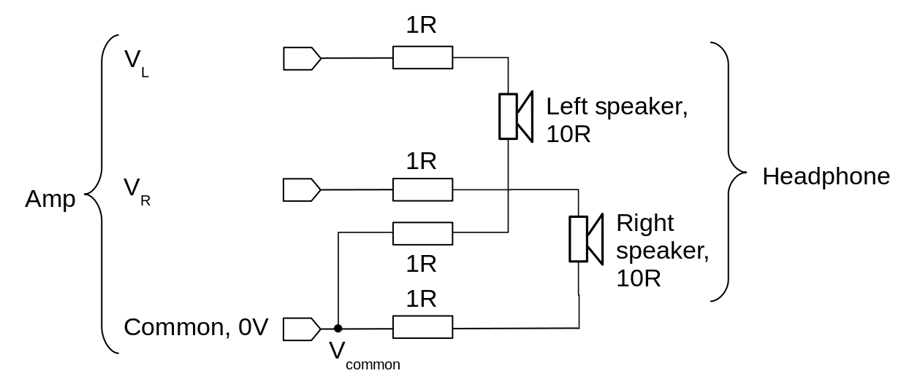
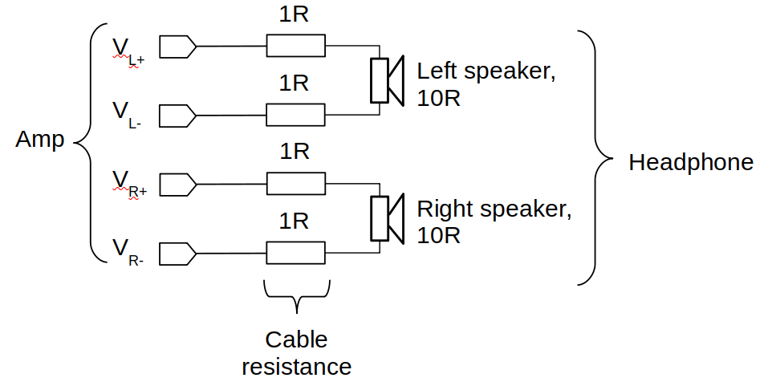

Snake oil: balanced headphones
 In recent years there has been a trend for high-end audio equipment
-- even portable music players -- to provide "balanced" outputs
for headphones. There's very little evidence that the use of
such outputs improves sound quality in blind testing, although it
adds significantly to the cost and complexity of the equipment.
In recent years there has been a trend for high-end audio equipment
-- even portable music players -- to provide "balanced" outputs
for headphones. There's very little evidence that the use of
such outputs improves sound quality in blind testing, although it
adds significantly to the cost and complexity of the equipment.
There doesn't even seem to be a clear understanding among the buying public about how balanced headphones are supposed to work. The term "balanced" is often used to describe a scheme where the left and right speakers of the headphones have separate amplifier connections. As I will explained, a genuine "balanced" headphone connection requires more than this -- and still probably won't provide any benefit.
My suspicion is that the manufacturers of equipment of this type are exploiting the fact that fussy, technically-savvy buyers will already be aware of the (perfectly legitimate) use of balanced signal connections between other audio equipment. However, the fact that there are, in fact, perfectly appropriate applications for balanced audio connections does not mean that that headphone amplifiers represent such an application.
Conventional three-wire headphone connection
The figure below shows how typical inexpensive headphones (and some expensive ones) are connected to an amplifier. There are three conductors between the amplifier and the two headphone speakers -- one conductor supplying terminal of each speaker, and one conductor acting as the common return path for current.

I've included some figures for the equivalent resistances of the various parts of the circuit; they aren't intended to be accurate: they're just a starting point for understanding the circuit behaviour. I'm also aware that neither the cables nor the speakers are true resistances, but that doesn't really change the analysis.
VL and VR are the voltages at the left and right amplifier outputs. These are measured with respect to the common conductor which, for simplicity, I will take to be zero volts.
If the right output were not connected to anything, then the left speaker would be (in this simple representation) a resistance of ten ohms in series with the cable resistance of two ohms. This circuit would effectively be a voltage divider in the ratio of 10/12. Apart from the slight loss of volume, the cable resistance has no effect on audio reproduction.
When both the right and left outputs are connected, however, the voltage Vcommon at the common conductor will depend on both the left and right voltages, as both contribute a flow of current in the cable resistance in the common path. This means that both speaker voltages will depend, to some extent, on both output voltages. This is cross-talk, and is rightly considered to be a Bad Thing.
With the resistances shown, the cross-talk is likely to be substantial. Very approximately, about 10% of the voltage seen by the left speaker will come from the right output. In reality, though, two factors make this effect less significant. First, in most music the difference the left and right output level is not that great most of the time. Of course, it's great enough to make it worth recording in stereo, but it's still comparatively small.
Second, and more important, the cable resistance won't be anything close to one ohm. With decent-quality cable and connectors, the resistance will be of the order of milliohms. The amount of cross-talk will be small, in a context where the difference between left and right signals is already quite small. In practice, cross-talk can't be eliminated: in any headphone there will be some unavoidable cross-talk through the listener's skull. With open-back headphones, there will also be cross-talk through the air around the skull. Without elaborate suspension arrangements, there will be cross-talk across the headphone's head-band. In short, we're looking at electrical cross-talk that is likely to be smaller than unavoidable mechanical cross-talk. It's worth thinking about how much trouble we should go to to eliminate electrical cross-talk, when mechanical and acoustic cross-talk is inevitable.
Conventional four-wire headphone connection
While not all sources of cross-talk can be eliminated, there's no harm in trying to mitigate the problems that we actually can mitigate, if it's practicable to do so. A significant improvement can be made simply by using a four-wire connection between the amplifier and the headphone, as shown below.
The cable resistance still forms a voltage divider with the speaker coil, but now there's no resistance in a common current path.

Note that this is not a "balanced" design. Although balanced designs use four (or more) headphone conductors, not all four-wire arrangements are "balanced" in the sense under discussion here. In this four-wire arrangement, there is still a common point in the amplifier, but it splits in the headphone jack. So long as the amplifier's output impedance is low, no voltage is developed at the common point that can contribute to cross-talk.
There's nothing clever here: most full-size loudspeakers are connected using this four-wire set-up, with a common point inside the amplifier. Nor is it original: many decent headphones already use separate left and right connections all the way from the headphone jack to the headphone's speakers.
True balanced headphone connection
A true balanced design eliminates the common point completely. Each speaker is (usually) supplied with an equal and opposite pair of voltages. There is still a "zero volt" reference point somewhere in the amplifier, but it isn't directly applied to any headphone connection. In the diagram below, the "+" and "-" terminals are supposed to represent the complementary outputs of the amplifier.

I'm not going to go into any details about how a complementary-output amplifier is designed; it's pretty conventional stuff, although somewhat more complex than a "single-ended" amplifier that does not have these balanced outputs.
But does it work?
What advantage, if any, is offered by the use of balanced outputs (compared to a four-wire connection with a common point)? Proponents claim that these designs reduce cross-talk. However, we've already established that the use of a conventional four-wire connection will more-or-less eliminate electrical cross-talk, provided that the output impedance of the amplifier is low enough. And nothing can be done electrically to reduce acoustic and mechanical cross-talk, which could be much larger in practice. Despite vague claims, there's no reason to think that anything additional is gained by using balanced outputs. Why? In the end, the headphone speakers are completely independent of one another; each will "see" the same potential difference whether we express that as "one volt relative to a common point" or "0.5 volts relative to -0.5 volts". That's the crucial point here: headphone speakers are not electronic components operating with some kind of common electrical supply -- they are completely separate, electro-mechanical components.
This, I think, is where the confusion comes in. It's very common -- often necessary -- to use balanced connections when supplying an electronic amplifying device from some other device, or from a transducer. For example, studio microphones almost always use balanced connections. Why? Because electrical interference that is induced on the microphone cable will tend to affect both "arms" of the balanced connection equally. So when the balanced microphone feeds a balanced microphone amplifier, the subtractive operation of the amplifier removes, or at least reduces, the interference.
Unlike a microphone amplifier, a headphone's loudspeakers are not subtractive devices -- they simply respond to the potential difference between their terminals. So even in the unlikely event that interference could be induced onto a headphone cable that is loud enough to hear, the use of balanced connections will do nothing at all to ameliorate the situation. The benefits of balanced connections appear only when the receiver of the signal is subtracting the balanced voltages, relative to some common voltage point, to remove the interference.
So why do some people claim -- and honestly believe -- that the use of balanced connections improves headphone performance? Well, of course, there's always the "hi-fi placebo" effect whenever someone spends a lot of money on complicated equipment. It's possible that the balanced headphone design will use generally superior electrical connections and cables, with a lower overall impedance. It's also plausible that the manufacturers of balanced headphone equipment will have made a better job of the design overall, compared to traditional headphone amplifiers. My gut feeling, however, is that this is somewhat unlikely -- balanced amplifier designs are more complex than single-ended designs, and the higher component count leads to higher noise and increased output resistance. Even in situations where balanced connections might be expected to have benefits, their benefits have to be weight against their costs. Electric guitars, for example, almost never provide them, although the technology to do so certainly exists.
Summary
Balanced headphones are snake oil. Although balanced operation has no benefit in itself, it is arguably the case that manufacturers will use superior design and components generally, to accommodate discerning buyers. However, if this practice leads to improved audio quality, the connection between the improvement and the balanced operation is merely incidental. Balanced designs require increased complexity, and considerable attention to detail is needed even to equal the performance of a single-ended design, let alone exceed it.
In a way, balanced headphones are marketed in a way that is analogous to the marketing of the (also ineffective) "bi-wiring" of loudspeakers. It's possible to make a technical case for bi-wiring that has some vague plausibility, but it doesn't stand up to analysis. The difference, though, is that providing bi-wiring terminals on a loudspeaker adds only pennies to the cost; balanced headphone amplifiers are necessarily more complex, and thus more expensive, than traditional designs.